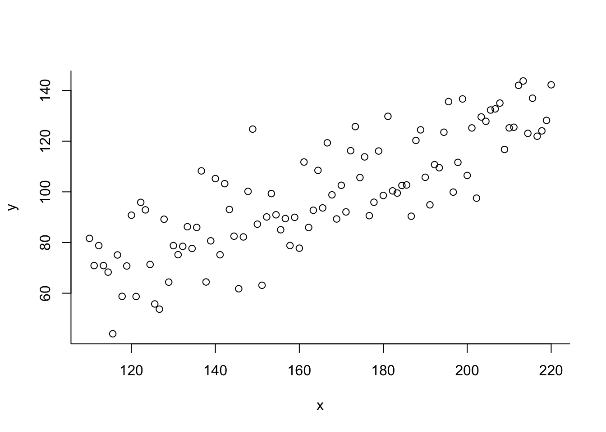

library(tidyverse)
library(rstan)
library(bayesplot)
library(extraDistr)
options(mc.cores=parallel::detectCores())
rstan_options(auto_write=TRUE)
rstan_options(threads_per_chain=1)Some bayesian modeling techniques in Stan
Stan provides a comprehensive user-oriented probabilistic programming language to specify the conditional probability function of observed and unobserved variables (data and parameters) that describes the posterior probability distribution.
\(\pi(q \mid \mathcal{D})\)
The Stan language requires specification of:
Data [what we are conditioning on]
Parameters [what the Markov chain is going to explore]
The (conditional) probability functions of observed and unobserved variables (data and parameters) that describe the prior and likelihood probability distributions [\(\pi(q)\) and \(\pi(\mathcal{D} \mid q)\)]
\(\pi(q \mid \mathcal{D}) = \frac{\pi(q)\pi(\mathcal{D} \mid q)}{\pi(\mathcal{D})} = \frac{\pi(q, \mathcal{D})}{\pi(\mathcal{D})}\)
data {
int<lower=1> N;
real x[N];
real y[N];
}
parameters {
real<lower=0> alpha;
real beta;
real<lower=0> sigma;
}
model {
alpha ~ cauchy(0, 10);
beta ~ normal(0, 10);
sigma ~ cauchy(0, 10);
for (i in 1:N)
y[i] ~ normal(beta * x[i] + alpha, sigma);
}N = 100
alpha = 0
beta = 0.6
sigma = 12
x = seq(from=110, to=220, length.out=N)
error = rnorm(N, 0, sigma)
y = alpha + x * beta + errorplot(y ~ x, bty="l")
sampling(model, data = list(x = x, y = y, N = N))Warning: There were 56 divergent transitions after warmup. See
https://mc-stan.org/misc/warnings.html#divergent-transitions-after-warmup
to find out why this is a problem and how to eliminate them.Warning: Examine the pairs() plot to diagnose sampling problemsWarning: Bulk Effective Samples Size (ESS) is too low, indicating posterior means and medians may be unreliable.
Running the chains for more iterations may help. See
https://mc-stan.org/misc/warnings.html#bulk-essWarning: Tail Effective Samples Size (ESS) is too low, indicating posterior variances and tail quantiles may be unreliable.
Running the chains for more iterations may help. See
https://mc-stan.org/misc/warnings.html#tail-essInference for Stan model: anon_model.
4 chains, each with iter=2000; warmup=1000; thin=1;
post-warmup draws per chain=1000, total post-warmup draws=4000.
mean se_mean sd 2.5% 25% 50% 75% 97.5% n_eff Rhat
alpha 4.98 0.50 4.03 0.18 1.90 3.92 7.01 15.29 66 1.06
beta 0.57 0.00 0.03 0.51 0.56 0.58 0.59 0.60 65 1.06
sigma 13.07 0.04 0.88 11.51 12.43 13.02 13.65 14.88 582 1.01
lp__ -305.16 0.06 1.27 -308.42 -305.81 -304.83 -304.22 -303.63 394 1.02
Samples were drawn using NUTS(diag_e) at Tue Jan 17 17:04:15 2023.
For each parameter, n_eff is a crude measure of effective sample size,
and Rhat is the potential scale reduction factor on split chains (at
convergence, Rhat=1).Linear models
\(\mathcal{D} \rightarrow \{y, x\}\)